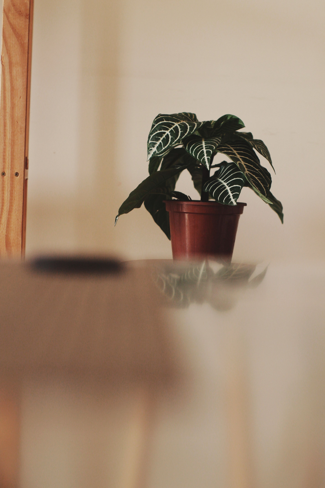
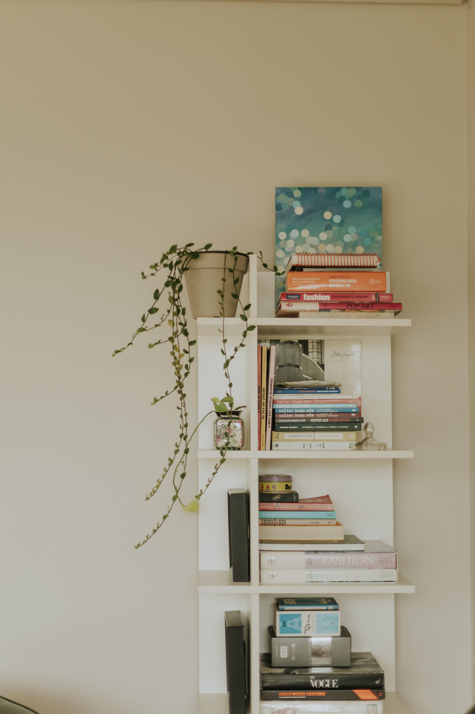
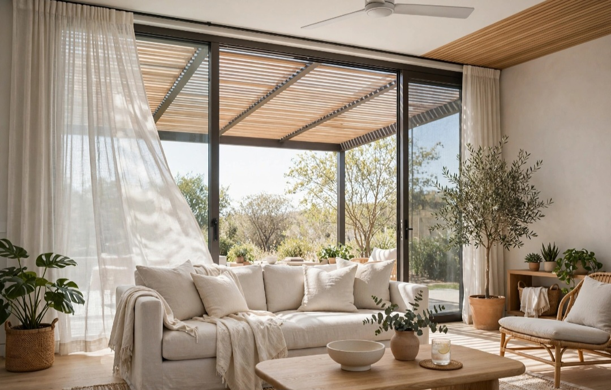

En este artículo
Introducción
Una sala pequeña puede ser cómoda, bonita y funcional cuando la distribución, la escala de los muebles, la iluminación y el almacenamiento se planifican según el espacio real y los hábitos de quienes la utilizan.
Antes de realizar cambios, conviene observar las condiciones reales, medir y definir qué quieres mejorar. Una planificación sencilla evita compras impulsivas y permite que cada elemento tenga una función clara.
Distribución y circulación
Empieza midiendo la habitación, incluyendo puertas, ventanas, enchufes y recorridos. Después define las actividades principales: conversar, ver televisión, leer, recibir visitas o trabajar ocasionalmente. La distribución debe responder a esas funciones y no a una fotografía idealizada.
Mantén un recorrido claro entre la entrada y las demás habitaciones. Si hay que rodear una mesa o mover una silla cada vez que alguien pasa, la distribución necesita ajustes. En muchos casos, separar ligeramente el sofá de la pared mejora la composición, pero en salas muy estrechas puede ser más práctico aprovechar el perímetro.
Define un punto focal. Puede ser una ventana, una obra, una estantería o el televisor. Orientar los muebles alrededor de un punto principal evita que cada pieza parezca colocada de forma independiente.
No intentes introducir demasiadas zonas. Una sala pequeña puede admitir comedor o escritorio, pero cada función adicional necesita límites claros. Una mesa extensible o un escritorio compacto puede funcionar mejor que varios muebles permanentes.
Antes de tomar una decisión definitiva, trabaja por etapas. Primero resuelve la función y después la estética. Esta secuencia reduce compras impulsivas y permite detectar si un problema de decoración era en realidad un problema de circulación, escala o almacenamiento.
Haz fotografías durante el proceso. La cámara simplifica la escena y ayuda a detectar desequilibrios. También conviene observar el espacio por la mañana y por la noche, porque la luz puede cambiar por completo la percepción de colores y volúmenes.
Muebles proporcionados y funcionales
La escala importa más que la cantidad. Un sofá enorme puede bloquear la habitación, pero varios asientos diminutos también generan ruido y ocupan circulación. Mide la profundidad, no solo la anchura. Los brazos estrechos y diseños de líneas simples pueden ofrecer más superficie útil.
Las mesas auxiliares móviles o encajables permiten adaptar el espacio. Una mesa de centro con almacenamiento puede guardar mandos o mantas, aunque debe dejar suficiente paso. Si el espacio es muy limitado, prescindir de mesa central y usar mesas laterales puede ser una mejor decisión.
Los muebles con patas visibles dejan ver más suelo y pueden aportar ligereza. Sin embargo, el almacenamiento cerrado también es valioso. Elige según necesidades reales: una familia con muchos objetos puede beneficiarse más de un mueble cerrado que de una consola visualmente ligera.
Evita comprar antes de marcar medidas en el suelo con cinta. Esta prueba muestra cuánto espacio ocupará realmente una pieza y permite comprobar puertas, cajones y circulación.

El presupuesto debe definirse antes de comprar. Prioriza las piezas que afectan al uso diario y deja los accesorios para el final. Una solución adecuada y duradera suele aportar más valor que varias compras pequeñas realizadas sin planificación.
Reutilizar elementos existentes también forma parte del diseño. Mover, limpiar, reparar o dar una función diferente a una pieza puede resolver una necesidad sin aumentar la cantidad de objetos en casa o jardín.
Paredes, luz y sensación de amplitud
La luz natural debe aprovecharse sin bloquear ventanas con muebles demasiado altos. Cortinas que puedan abrirse completamente permiten utilizar toda la entrada de luz. Si necesitas privacidad, combina capas según las condiciones del hogar.
Los colores claros reflejan luz, pero no son una regla obligatoria. Una paleta coherente, con pocos contrastes bruscos, puede hacer que la sala se perciba más continua. Un color más profundo en una pared también puede aportar carácter si la iluminación es suficiente.
Los espejos ayudan cuando reflejan luz o una vista agradable. Colocarlos simplemente por la idea de “agrandar” puede no producir el efecto esperado. Observa qué aparecerá en el reflejo.
La iluminación artificial debe tener capas: una fuente general, luz para lectura y alguna iluminación ambiental. Evita depender de una sola lámpara central muy intensa. Las lámparas de pie estrechas o apliques pueden ahorrar superficie en mesas.
El mantenimiento futuro merece atención desde el principio. Materiales delicados o soluciones difíciles de limpiar pueden resultar atractivos en una imagen y poco prácticos en la vida diaria. Revisa instrucciones de cuidado y piensa en clima, mascotas, niños y frecuencia de uso.
La seguridad tampoco debe sacrificarse por estética. Fijaciones, estabilidad, superficies antideslizantes, cargas y recorridos deben resolverse correctamente. Cuando una instalación supera un cambio decorativo sencillo, busca asesoramiento profesional.
Orden y personalidad sin saturar
El orden visual es decisivo en pocos metros. Define lugares para cables, mandos, documentos y objetos cotidianos. Las superficies completamente llenas hacen que la sala parezca más pequeña aunque los muebles tengan buen tamaño.
Utiliza almacenamiento vertical con moderación. Una estantería alta aprovecha la pared, pero varias pueden crear sensación de encierro. Alterna zonas de almacenaje con paredes más libres.
La personalidad puede aparecer en pocos elementos: una obra, una planta, una alfombra o cojines. No necesitas exhibir todas tus colecciones al mismo tiempo. Rotar objetos permite renovar sin acumular.

Revisa la sala cada pocos meses. Si una mesa nunca se usa o una cesta siempre estorba, retírala. En un espacio pequeño, cada elemento debe aportar comodidad, almacenamiento o valor visual claro.
Deja espacio para que el ambiente evolucione. No es necesario completar todos los rincones de inmediato. Vivir con la nueva distribución durante unos días permite descubrir qué falta realmente y qué huecos conviene mantener libres.
Una revisión cada pocos meses ayuda a retirar lo que ya no funciona. Los espacios agradables no dependen de acumular, sino de conservar una relación clara entre utilidad, proporción y personalidad.
Plan práctico para aplicar estas ideas
Aplicar los cambios de forma gradual permite controlar mejor el resultado. Haz una lista de prioridades, empieza por aquello que afecta a la comodidad y comprueba el efecto antes de continuar. Cuando una solución ya funciona, no es necesario añadir más elementos.
También conviene establecer una rutina sencilla de mantenimiento. Dedicar unos minutos de forma periódica a limpiar, ordenar y revisar evita que pequeños problemas se acumulen. Un diseño duradero es aquel que puede mantenerse sin esfuerzo desproporcionado.
Si una decisión implica perforaciones importantes, cambios estructurales, electricidad, cargas elevadas o problemas de humedad, la opción prudente es consultar a un profesional cualificado. La decoración debe mejorar el espacio sin crear riesgos.
Revisión final antes de dar el trabajo por terminado
Cuando hayas aplicado los cambios principales, utiliza el espacio con normalidad durante varios días. Observa recorridos, limpieza, comodidad y mantenimiento. Las decisiones que funcionan en una fotografía no siempre responden bien al uso diario, por eso esta prueba es importante.
Retira temporalmente cualquier elemento que genere dudas. Si el espacio funciona mejor sin él, probablemente no era necesario. Esta forma de editar ayuda a mantener proporción y evita que la decoración o el jardín se saturen con el paso del tiempo.
Por último, anota qué materiales, medidas o cuidados has utilizado. Esta información será útil cuando necesites reemplazar una pieza, realizar mantenimiento o ampliar el proyecto en el futuro.
Revisión final antes de dar el trabajo por terminado
Cuando hayas aplicado los cambios principales, utiliza el espacio con normalidad durante varios días. Observa recorridos, limpieza, comodidad y mantenimiento. Las decisiones que funcionan en una fotografía no siempre responden bien al uso diario, por eso esta prueba es importante.
Retira temporalmente cualquier elemento que genere dudas. Si el espacio funciona mejor sin él, probablemente no era necesario. Esta forma de editar ayuda a mantener proporción y evita que la decoración o el jardín se saturen con el paso del tiempo.

Por último, anota qué materiales, medidas o cuidados has utilizado. Esta información será útil cuando necesites reemplazar una pieza, realizar mantenimiento o ampliar el proyecto en el futuro.
Revisión final antes de dar el trabajo por terminado
Cuando hayas aplicado los cambios principales, utiliza el espacio con normalidad durante varios días. Observa recorridos, limpieza, comodidad y mantenimiento. Las decisiones que funcionan en una fotografía no siempre responden bien al uso diario, por eso esta prueba es importante.
Retira temporalmente cualquier elemento que genere dudas. Si el espacio funciona mejor sin él, probablemente no era necesario. Esta forma de editar ayuda a mantener proporción y evita que la decoración o el jardín se saturen con el paso del tiempo.
Por último, anota qué materiales, medidas o cuidados has utilizado. Esta información será útil cuando necesites reemplazar una pieza, realizar mantenimiento o ampliar el proyecto en el futuro.
Revisión final antes de dar el trabajo por terminado
Cuando hayas aplicado los cambios principales, utiliza el espacio con normalidad durante varios días. Observa recorridos, limpieza, comodidad y mantenimiento. Las decisiones que funcionan en una fotografía no siempre responden bien al uso diario, por eso esta prueba es importante.
Retira temporalmente cualquier elemento que genere dudas. Si el espacio funciona mejor sin él, probablemente no era necesario. Esta forma de editar ayuda a mantener proporción y evita que la decoración o el jardín se saturen con el paso del tiempo.
Por último, anota qué materiales, medidas o cuidados has utilizado. Esta información será útil cuando necesites reemplazar una pieza, realizar mantenimiento o ampliar el proyecto en el futuro.
Revisión final antes de dar el trabajo por terminado
Cuando hayas aplicado los cambios principales, utiliza el espacio con normalidad durante varios días. Observa recorridos, limpieza, comodidad y mantenimiento. Las decisiones que funcionan en una fotografía no siempre responden bien al uso diario, por eso esta prueba es importante.
Retira temporalmente cualquier elemento que genere dudas. Si el espacio funciona mejor sin él, probablemente no era necesario. Esta forma de editar ayuda a mantener proporción y evita que la decoración o el jardín se saturen con el paso del tiempo.
Por último, anota qué materiales, medidas o cuidados has utilizado. Esta información será útil cuando necesites reemplazar una pieza, realizar mantenimiento o ampliar el proyecto en el futuro.
Preguntas frecuentes
¿Cuál es la mejor manera de empezar?
Empieza midiendo y observando el espacio antes de comprar. En cómo decorar una sala pequeña y aprovechar mejor el espacio, la planificación permite tomar decisiones proporcionadas y evitar cambios innecesarios.
¿Cuánto tiempo se necesita para ver resultados?
Los primeros cambios pueden apreciarse de inmediato, pero conviene probar la distribución y los materiales durante varios días antes de considerar el resultado definitivo.
¿Qué errores deberían evitarse?
Evita comprar sin medir, saturar el espacio, ignorar el mantenimiento y elegir soluciones únicamente por tendencia sin considerar el uso cotidiano.
Conclusión
Cómo decorar una sala pequeña y aprovechar mejor el espacio requiere combinar estética y función. Medir, observar, elegir materiales adecuados y avanzar por etapas permite conseguir un resultado más coherente, fácil de mantener y adaptado a la vida cotidiana.